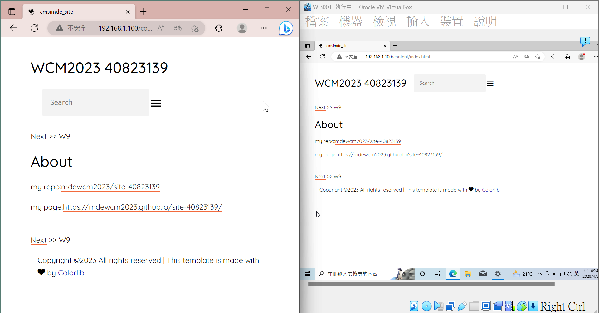

SSH <<
Previous Next >> 平均成績讀取
Nginx建立伺服器
本週任務:利用nginx建立非同步網頁伺服器，並呈現網頁
- 架設所需環境:取得nginx，利用nignx作為web server
- 取得環境參數:在cmd輸入ipconfig取得ipv4的位址
- 環境參數調整:開啟編輯器，匯入nginx\conf資料夾中的config檔(nginx.conf)，
修改server name 由localhost改為本地的ipv4地址
- 執行nginx，並在網頁上輸入其ip地址，正常情況下會顯示nginx\html底層)的index.html內容
- 將自己的網頁內容放入nginx\html中，並重新啟動(啟動後應確認顯示內容)
- 進入防火牆的進階設定，選擇輸入規則，並指定為TCP型式，連接埠設定為80，並允許權限，
新增完成後會在新增規則的頁面中看到
- 在同網域不同裝置下測試，若有成功顯示網頁則成功

補充資料:
[基礎觀念系列] Web Server & Nginx — (2) | by 莫力全 Kyle Mo | Starbugs Weekly 星巴哥技術專欄 | Medium
SSH <<
Previous Next >> 平均成績讀取